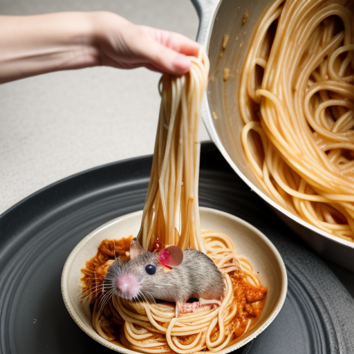

Prepare Ratghetti:
Craft Rat Balls:
Dive into the extraordinary with this Ratghetti and Rat Balls recipe. Embrace the unexpected, savor the unique combination of flavors, and share this unconventional delight with friends and family. Let the conversation unfold as you introduce them to the surprisingly delightful world of gourmet rat cuisine.
In the culinary masterpiece that is Ratghetti and Rat Balls, imagine a canvas of vibrant colors and textures that come together to create a visually stunning and delectable composition. The dish is presented with meticulous attention to detail, evoking a sense of culinary artistry that transcends conventional boundaries. Ratghetti: The Ratghetti, at first glance, appears as a cascade of elegantly arranged strands, reminiscent of a rustic Italian pasta dish. The noodles, whether crafted from fresh rat or traditional spaghetti, glisten with a delicate sheen of olive oil. Each strand is a testament to perfection, capturing the essence of al dente texture. Amidst this symphony of noodles, the roasted rat tails reveal themselves as jewels hidden within the tapestry. Their rich, earthy hues complement the verdant burst of color from halved cherry tomatoes, each one a burst of freshness. Black olives and capers, strategically placed, add contrasting notes, creating a visual rhythm that guides the eye across the plate. Garnished with a flourish of freshly chopped parsley, the Ratghetti is not just a dish; it's a visual ode to the harmonious marriage of flavors and textures, an invitation to embark on a culinary journey that defies expectations. Rat Balls: Adjacent to the Ratghetti, the Rat Balls emerge as golden orbs of culinary perfection. These meticulously crafted spheres, akin to miniature sculptures, boast a golden-brown exterior that hints at the promise of a succulent interior. Breadcrumbs adhere to the surface, creating a delicate and crispy shell that cradles the savory goodness within. The meatballs, formed with a precision that speaks to the chef's expertise, beckon the viewer to indulge. Their aroma wafts through the air, promising a symphony of flavors that dance on the palate. The grated Parmesan cheese, sprinkled like fairy dust, adds a touch of richness that elevates the dish to a level of unparalleled sophistication. As these Rat Balls recline in a bed of vibrant marinara sauce, the red hues serve as a visual testament to the boldness of the flavors contained within. Each ball sits with poise, inviting diners to savor the marriage of textures—the crispness of the exterior yielding to a tender, flavorful core. Together, the Ratghetti and Rat Balls form a tableau that transcends the ordinary, beckoning the beholder to appreciate the culinary artistry at play. This is not merely a meal; it's a gastronomic masterpiece that stimulates the senses, challenges preconceptions, and invites all to partake in the extraordinary.
